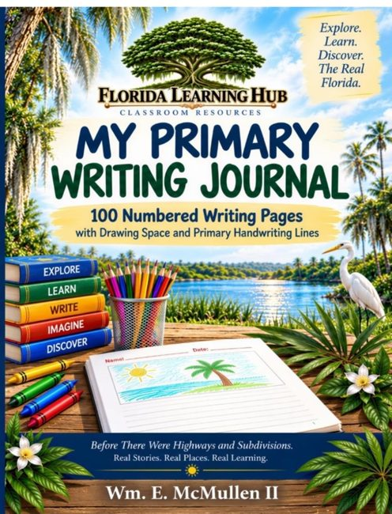

My Primary Writing Journal
Book Description
Give young writers a place for both their words and their imagination.
My Primary Writing Journal includes 100 numbered writing pages designed for primary students. Each writing page provides a large blank space for drawing and illustration along with primary handwriting lines for student writing.
Numbered pages make classroom organization easier for teachers and help students keep their work in order—without teachers having to hand-number an entire classroom set of journals.
Ideal for daily writing, creative writing, journal prompts, story development, science observations, social studies responses, classroom reflections, and illustrated writing assignments.
Features include:
- 100 numbered writing pages
- Drawing and illustration space
- Primary handwriting lines
- Large 8.5 × 11 inch format
- Designed for classroom and individual student use
Part of the Florida Learning Hub Classroom Resources series.
Explore. Learn. Discover. The Real Florida.